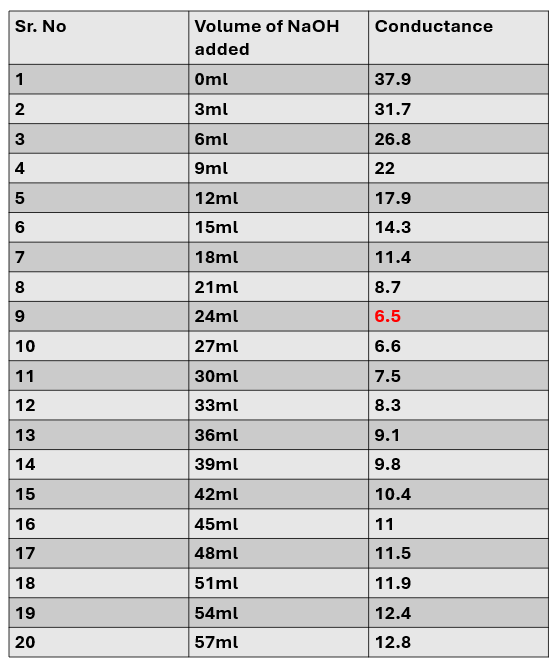
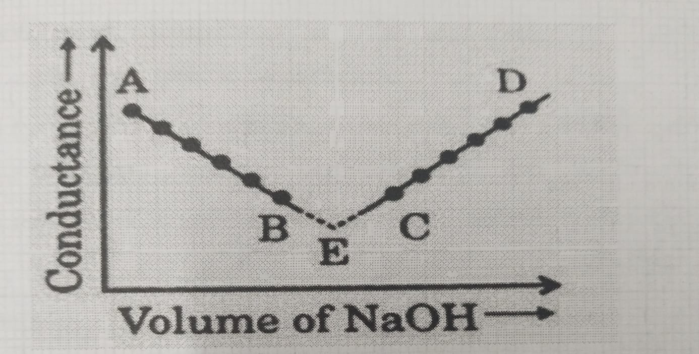
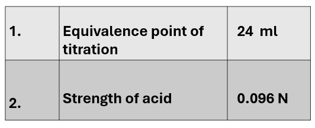

Titration of strong acid with strong base using conductivity meter and determine the strength of acid.
Conductance, resistance, variation in conductance w.r.t concentration. Weak and strong acids-bases.
The principle of conductometric titration is based on the fact that during titration, one of the ions is replaced by other and invariably these two ions differ in the ionic conductance with the result that conductivity of solution varies during the titration.
Conductometric titration → Change in Conductance →
• Type of ions
• Mobility of ions
The equivalence point is located graphically by plotting change in conductance as function of the volume of titrant added.
Volume of titrant added → Change in Conductance → Plotted graphically → End point determined
1. Intellectual Skills:
2. Motor Skills:
Factors affecting conductivity:
Beaker (100 ml), conductivity meter, burette, pipette, beakers, electrodes, micro burette
6.1 Chemicals:
0.1 N HCl, 0.1 N NaOH


NaOH vs HCl
N₁V₁ = N₂V₂
N₂ = (N₁ * V₁) / V₂
N₂ = 0.1*24/25 = 0.096N

1. Define conductance and specific conductance
Conductance (G):
It is the ability of a solution to conduct electricity.It is the reciprocal of resistance.
G = 1 / R
Specific conductance (κ or k):
It is the conductance of a solution taken in a cell of unit length and unit cross-sectional area.It depends on the number of ions present per unit volume.
2. Nature of graph of conductometric titration (Strong acid vs Strong base)
Initially, conductance is high due to highly mobile H⁺ ions.
As base is added, H⁺ ions are replaced by less mobile Na⁺ ions, so conductance decreases.
At equivalence point → minimum conductance.
After equivalence point, excess OH⁻ ions (high mobility) increase conductance → graph rises.
So, the graph is V-shaped
3. Construction of electrode used in conductometric titration
Consists of two platinum electrodes.
Electrodes are platinized (coated with platinum black) to increase surface area.
They are placed parallel to each other at a fixed distance.
Connected to a conductivity meter.
Dipped into the solution for measurement.
4. Write the units if these terms.
Conductance (G): Siemens (S) or ohm⁻¹
Specific conductance (κ): S cm⁻¹
Equivalent conductance (Λeq): S cm² eq⁻¹
Cell constant: cm⁻¹
5. Any two importance of conductometric titrations
Can be used for colored or turbid solutions where indicators fail.
Useful for weak acid-weak base titrations
6. Effect of dilution on conductance
Specific conductance decreases with dilution (fewer ions per unit volume).
Equivalent conductance increases with dilution (ions become more free and mobile)